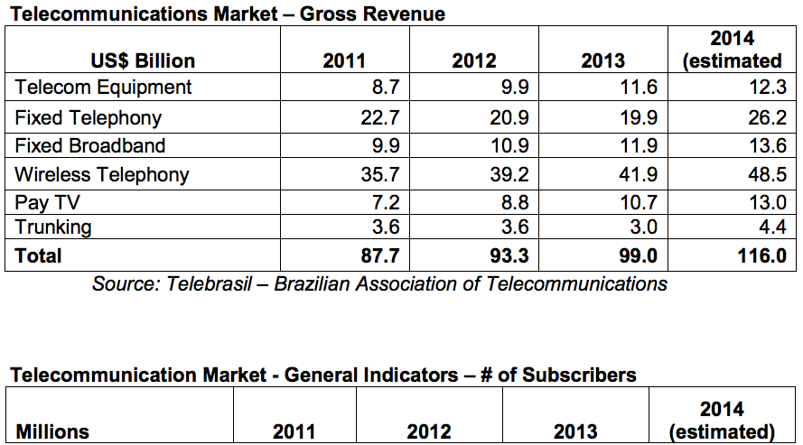

With approximately a third of the region’s population, Brazil is Latin America’s largest telecommunications market. The Brazilian telecom services market reached US$99 billion, up 6.3% versus the previous year. By 2017, the market is forecasted to reach US$120 billion.
Regulatory and legislative adjustments have been and will continue to be essential to sustained growth in the telecommunications sector. The approval of a new framework that allows telecommunications companies to offer cable and internet protocol television services is already reducing prices, accelerating adoption and increasing competition. Likewise, the National Government Broadband Plan is already spurring the expansion of broadband services throughout Brazil. However, high taxes are a persistent problem in hindering growth.
As for manufactured equipment, the market reached US$11.6 billion and industry expects 4% growth in 2014. Nearly all of the world's largest telecom OEMs have plants in Brazil, and most of them have global supply chains for items like components, instrumentation, processing and telecommunications equipment. Cutting edge technologies and solutions have demonstrated viable market opportunities.
The 2014 World Cup and 2016 Olympics assure that Brazil will continue to receive global attention. “4G” has already been launched, although the infrastructure needs improvement to raise the quality of services. The uptake of services, however, will begin gradually, with low initial adoption hampered by the high cost of devices.
